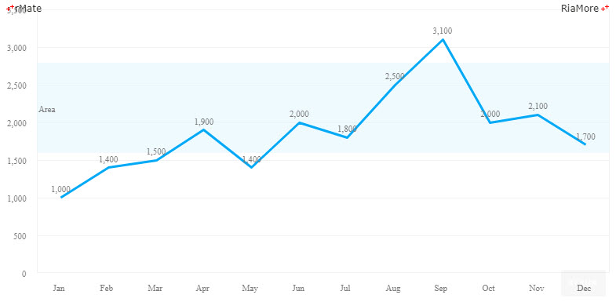
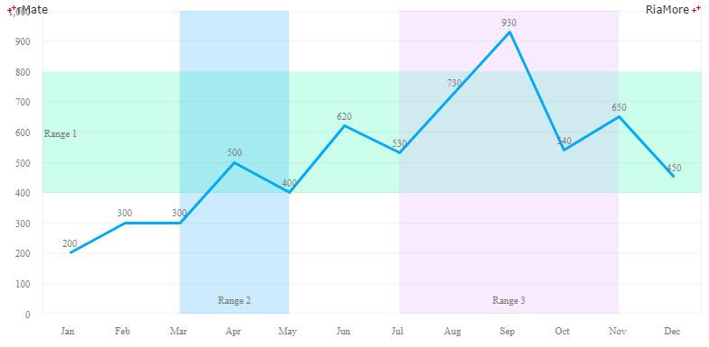

범위 지정하기
차트의 배경에 범위(영역)를 표시할 수 있습니다.
이러한 작업은 <backgroundElements> 속성에 <AxisMarker> 노드를 정의하고,
<AxisMarker> 노드의 <ranges> 속성에 <AxisRange> 노드를 설정함으로써 가능합니다.
다음은 <AxisRange> 노드의 주요 속성들을 설명한 표입니다.
| 속성명 |
유효값 (*: 기본값) |
설명 |
| endValue |
숫자
|
범위(영역)가 끝나는 지점의 값을 지정합니다.
|
| fill |
<LinearGradient>, <RadialGradient>, <SolidColor>
|
범위(영역)의 공간에 칠할 색의 스타일을 지정합니다.
|
| fill |
true(*), false
|
표시되는범위(영역)가 수평 범위(영역)인지 여부를 설정합니다.
|
| label |
텍스트
|
범위(영역)에 표시될 레이블을 지정합니다.
|
| labelHorizontalAlign |
center(*), left, right
|
레이블의 수평 정렬을 설정합니다.
|
| labelVerticalAlign |
bottom, middle(*), top
|
레이블의 수직 정렬을 설정합니다.
|
| startValue |
숫자
|
범위(영역)가 시작되는 지점의 값을 지정합니다.
|
다음은 차트에 범위를 지정하고 지정된 범위의 좌측에 레이블을 표시하는 예제입니다.
<backgroundElements>
<GridLines/>
<AxisMarker>
<ranges>
<AxisRange startValue="1600" endValue="2800" label="Area" labelHorizontalAlign="left" color="#EA594E">
<fill>
<SolidColor color="#e5f6fe" alpha="0.6"/>
</fill>
</AxisRange>
</ranges>
</AxisMarker>
</backgroundElements>

See the CodePen 알메이트 차트 - 차트에 범위 표시
다음은 수직 범위와 수평 범위를 함께 표시하는 예제입니다.
<backgroundElements>
<GridLines/>
<AxisMarker>
<ranges>
<AxisRange startValue="400" endValue="800" label="Range 1" fontSize="11" labelHorizontalAlign="left" fontFamily="Malgun Gothic">
<fill>
<SolidColor color="#00FF99" alpha="0.2"/>
</fill>
</AxisRange>
<AxisRange startValue="Mar" endValue="May" label="Range 2" labelYOffset="-10" fontSize="11" labelVerticalAlign="bottom" horizontal="false" fontFamily="Malgun Gothic">
<fill>
<SolidColor color="#0099FF" alpha="0.2"/>
</fill>
</AxisRange>
<AxisRange startValue="Jul" endValue="Nov" label="Range 3" labelYOffset="-10" fontSize="11" labelVerticalAlign="bottom" horizontal="false" fontFamily="Malgun Gothic">
<fill>
<SolidColor color="#dd99FF" alpha="0.2"/>
</fill>
</AxisRange>
</ranges>
</AxisMarker>
</backgroundElements>

See the CodePen 알메이트 차트 - 차트에 수직 범위와 수평 범위를 함께 표시